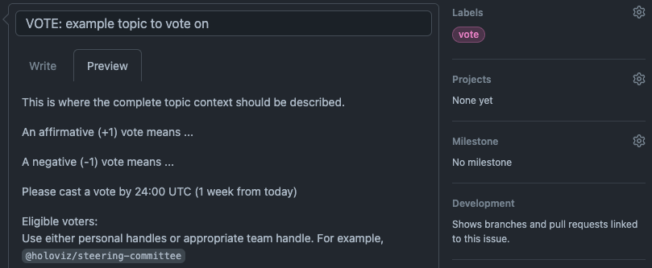

Charter for the HoloViz Organization#
This is the organizational charter for the HoloViz Organization. The HoloViz Organization is an open-source and collaborative effort with a mission to develop visualization solutions for Python.
1. Terminology#
“HoloViz” or “HoloViz Community” or “Community”: The entire HoloViz ecosystem of Users, Contributors, Projects, and communication channels
“HoloViz Organization” or “Organization”: The voting members of HoloViz Committees and Projects
“HoloViz GitHub Organization”: The GitHub organization at https://github.com/holoviz
“HoloViz Projects” or “Projects” or “Organization Projects”: Repositories in the HoloViz GitHub Organization and their voting members
“HoloViz repo” or “HoloViz repository”: The specific repository at https://github.com/holoviz/holoviz
“HoloViz.org”: The website at https://holoviz.org/
2. Organization Steering Committee#
The Steering Committee.md file Steering Committee members agree to the policies in this document.
2.1 Purpose. The Steering Committee will be responsible for:
Admitting or removing Projects from the Organization
Appointing or removing members from the Steering Committee
Setting the overall scope, vision, policy, and direction of the Organization
Handling strategic collaborations with other organizations or individuals
Making financial decisions and setting funding strategies
Managing trademarks and other legal matters for the Organization
Making technical decisions whose implementation or impact spans across HoloViz Projects
The Steering Committee is not responsible for software and other technical decisions that relate to individual projects.
2.2 Composition. The Steering Committee voting members are listed in this repository’s Steering-Committee.md file. Voting members may be added or removed by no less than 3/4 affirmative vote of the Steering Committee. There may be no less than 3 active members of the Steering Committee. If the membership count decreases to 2, all Steering Committee activity is halted, except for the election of a new member. If there are either 0 or 1 Steering Committee members, all Steering Committee activity is halted until the HoloViz Project Directors elect at least 3 total Steering Committee members in a special election that follows the 3/4 affirmative vote policy.
3. Voting#
3.1 Decision Making. The Steering Committee will strive for all decisions to be made by consensus. While the explicit agreement of the entire Steering Committee is preferred, it is not required for consensus. Rather, the Steering Committee will determine consensus based on their good faith consideration of several factors, including the dominant view of the Steering Committee and the nature of support and objections. In general, a consensus is defined by the absence of strong objections. If consensus cannot be reached, the Steering Committee will make the decision by a vote.
3.2 Voting. Any member of the Steering Committee may call a vote with reasonable notice to the Steering Committee, setting out a reasonable deadline by which to cast a vote (at least 3 working days). Any discussion may be conducted in person or electronically by text, voice, or video. The vote must take place in such a way that all Committee members are notified that there is a vote and understand how to cast a vote. Individual vote counts should be recorded in a consistent and publicly accessible format that includes the date, proposer, description, and amount (in the case of financial matters). In any vote, each voting representative will have one vote. Except as specifically noted elsewhere in this charter, decisions by vote require a simple majority vote of all reachable and vote-participating members.
For example, a Committee member decides to call for a vote on a financial issue that did not reach a consensus. This member files an issue on the HoloViz repository that details the context, states precisely what an affirmative (“+1”) or negative (“-1”) vote means in regards to the issue being voted on, tags other members of the Committee by their handle (@…), starts the issue title with “VOTE:”, and adds the “vote” tag. This proposing member also specifies a date by which votes will be tallied - 1 week beyond the posting date. In this example, 7 Committee members vote by the deadline, of which 5 vote affirmative, and therefore the issue is considered carried and closed.
Here is an example for using a GitHub issue for voting: 
3.3 Quorum. Unless otherwise stated, a quorum for a vote can be met with the participation of at least 50% of Steering Committee members, and at minimum, 2 participants. For example, in a vote requiring a simple majority, with 10 active Steering Committee members, at least 5 must vote; if 5 vote, there must be 3 affirmative votes to pass. Alternatively, if there are 3 active members, at least 2 must vote; if 2 vote there must be 2 affirmative votes to pass.
4. Termination of Membership#
In addition to the method set out in section 2.2, the membership of a Steering Committee member will terminate if any of the following occur:
4.1 Resignation. Written notice of resignation to the Steering Committee.
4.2 Unreachable Member. If a member is unresponsive at its listed handle for more than three months the Steering Committee may vote to remove the member. The vote will be by simple majority of vote-participating committee members.
5. Trademarks#
Any names, trademarks, service marks, logos, mascots, or similar indicators of source or origin and the goodwill associated with them arising out of the Organization’s activities or Organization projects’ activities (the “Marks”), are controlled by the Organization. Steering Committee members may only use the Marks in accordance with the Organization’s trademark policy. If a Steering Committee member is terminated or removed from the Steering Committee, any rights the Steering Committee member may have in the Marks revert to the Organization.
6. Antitrust Policy#
The Steering Committee is bound by the Organization’s antitrust policy.
7. No Confidentiality#
Information disclosed in connection with any of the Organization’s activities, including but not limited to meetings, Contributions, and submissions, is not confidential, regardless of any markings or statements to the contrary.
8. Project Criteria#
To become a HoloViz Project, it must:
Be approved by the Steering Committee.
Agree to follow the guidance and direction of the Steering Committee.
Use only the following outbound licenses or agreements unless otherwise approved:
For code, a license on the Open Source Initiative’s list of Popular Licenses.
For data, a license on the Open Knowledge Foundation’s list of Recommended Conformant Licenses.
For specifications, a community-developed and maintained specification agreement, such as the Open Web Foundation Agreements or Community Specification Agreement.
Include and adhere to the Organization’s policies, including the trademark policy, the antitrust policy, and the code of conduct.
9. Amendments#
Amendments to this charter, the antitrust policy, the trademark policy, or the code of conduct may only be made with at least a 3/4 affirmative vote of the Steering Committee.
10. Code of Conduct Committee#
The Code of Conduct Committee (CoCC) will be responsible for enforcing and updating the code of conduct.
The current CoCC members are listed in the CODE_OF_CONDUCT.md file in the repository. Unless removed, CoCC members may serve indefinitely, as long as they adhere to the Organization’s policies, including the trademark policy, the antitrust policy, and the code of conduct. Voting members may be added or removed by a simple majority of their fellow reachable and vote-participating CoCC members. CoCC members are expected to recuse themselves if they have a conflict of interest, and are required to recuse themselves if they are the accused or the target of the reported behavior. CoCC members may also resign at any time. There must be at least 3 individuals serving on the CoCC at any time, but there is no upper limit on the number of CoCC members. If a member is unresponsive at their listed handle for more than 3 months, the CoCC may vote to remove the member.
The CoCC will strive for all decisions to be made by consensus. If consensus cannot be reached, the CoCC will make the decision by a vote. To take action, a simple majority of eligible CoCC members must vote (eligible members do not include those excluded because of conflicts of interest) and a simple majority of the votes cast need to be affirmative.
11. Infrastructure and Account Access#
Upon request by a Steering Committee member, accounts related to the HoloViz Organization or any HoloViz Project must be made accessible to the requester. An exception is granted for accounts that contain information relating to code of conduct reports, of which the Code of Conduct Committee has sole custody.
This document is based on GitHub MVG-0.1-beta, which is Licensed under the CC-BY 4.0 License.